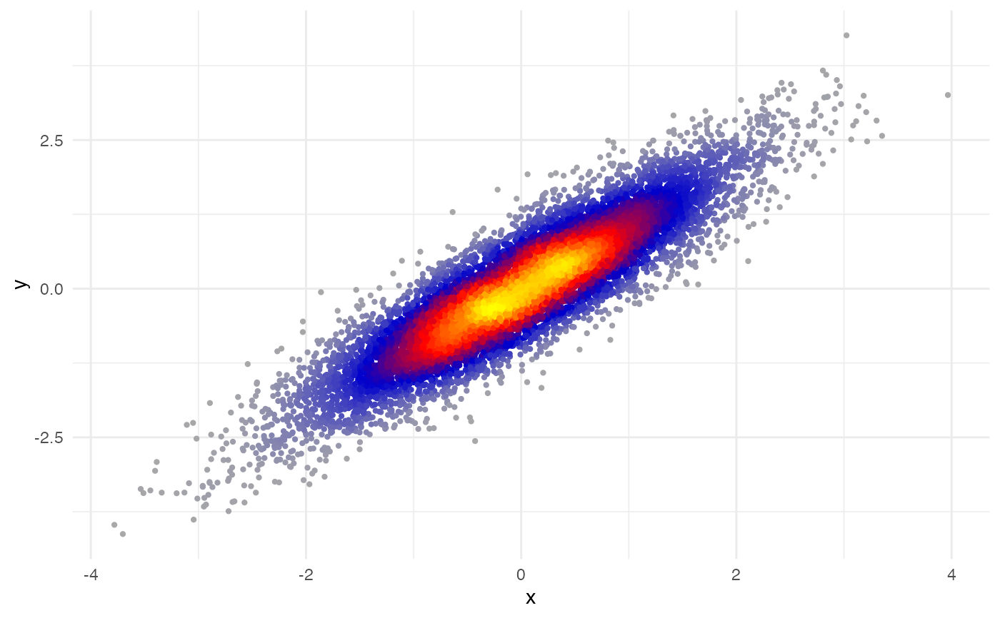
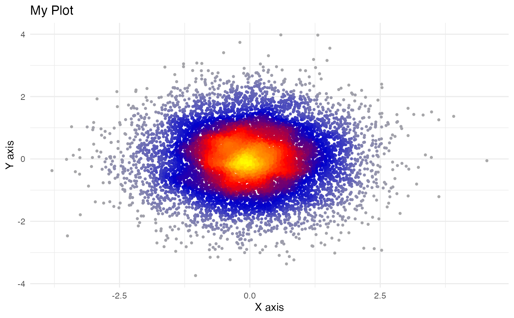
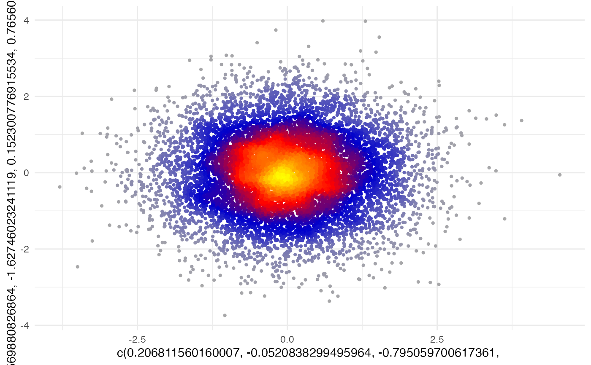
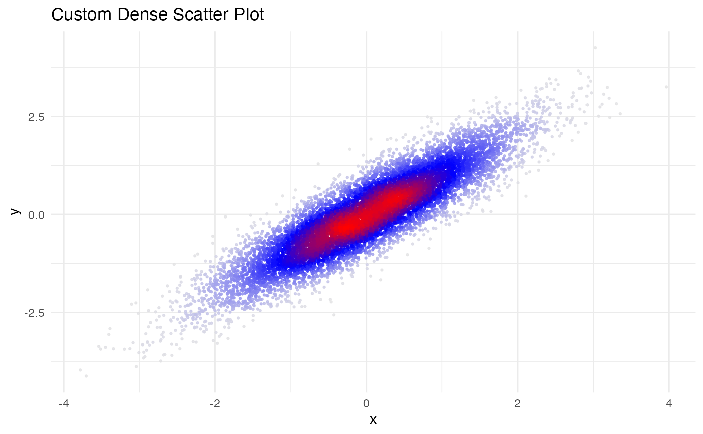
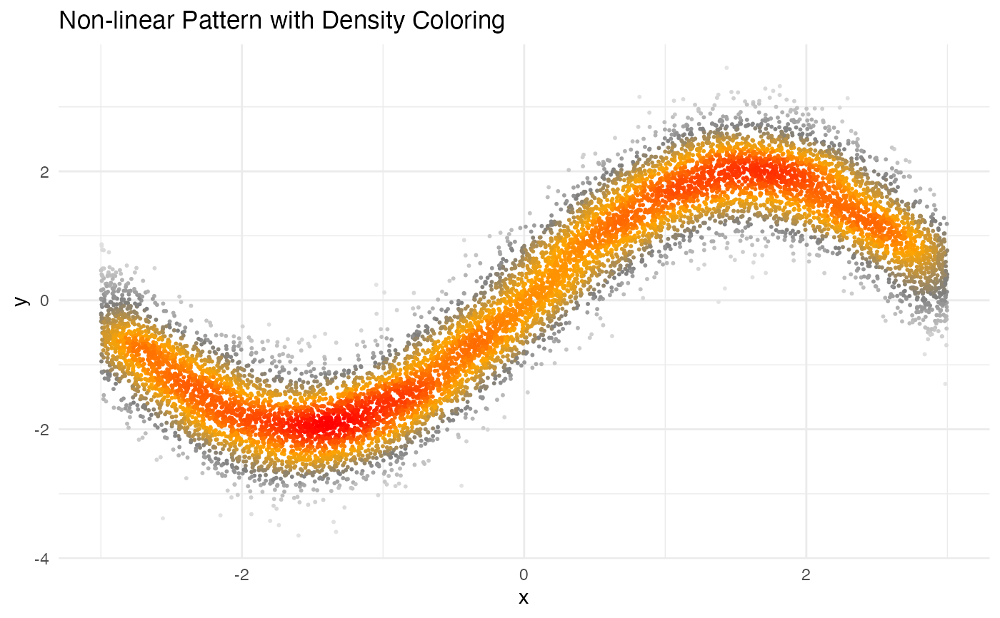

Creates a scatter plot where points are colored by their local density using ggplot2. This function provides a convenient wrapper around geom_dense_scatter that mimics the behavior of base R's plot function while providing modern visualization features.
plot_dense_scatter(
x,
y,
xlab = NULL,
ylab = NULL,
main = NULL,
pal = c("darkgray", "blue3", "red", "yellow"),
size = 0.8,
alpha = 1,
...
)A vector of x coordinates, or a matrix/data frame with 2 columns where the first column is used as x coordinates.
A vector of y coordinates. Optional if x is a matrix/data frame.
Character string for x-axis label. If NULL, the name of x is used.
Character string for y-axis label. If NULL, the name of y is used.
Character string for the plot title.
Color palette vector. Colors to use for density gradient from lowest to highest density. Default is c("darkgray", "blue3", "red", "yellow").
Numeric value for point size. Default is 0.8.
Numeric value between 0 and 1 for point transparency. Default is 1.
Additional arguments passed to geom_dense_scatter.
The function automatically handles different input types and provides appropriate axis labels based on the input variable names. It uses geom_dense_scatter for the actual plotting, which colors points based on their local density.
The density coloring helps visualize patterns in large datasets by highlighting areas of high point concentration. The color gradient can be customized using the pal parameter.
The function accepts inputs in several formats: * Two vectors of equal length for x and y coordinates * A matrix or data frame with 2 columns (first for x, second for y) * A matrix or data frame with x parameter only (uses first two columns)
geom_dense_scatter for the underlying plotting function
# Basic usage with vectors
x <- rnorm(1e4)
y <- x + rnorm(1e4, sd = 0.5)
plot_dense_scatter(x, y)

# Using a data frame
df <- data.frame(
x = rnorm(1e4),
y = rnorm(1e4)
)
plot_dense_scatter(df$x, df$y,
xlab = "X axis",
ylab = "Y axis",
main = "My Plot"
)

# Using matrix-like input
plot_dense_scatter(df)

# Customizing appearance
plot_dense_scatter(x, y,
pal = c("gray90", "blue", "red"),
size = 0.5,
alpha = 0.8,
main = "Custom Dense Scatter Plot"
)

# Visualizing non-linear relationships
x <- runif(1e4, -3, 3)
y <- sin(x) * 2 + rnorm(1e4, 0, 0.5)
plot_dense_scatter(x, y,
pal = c("gray90", "gray50", "orange", "red"),
size = 0.4,
main = "Non-linear Pattern with Density Coloring"
)
